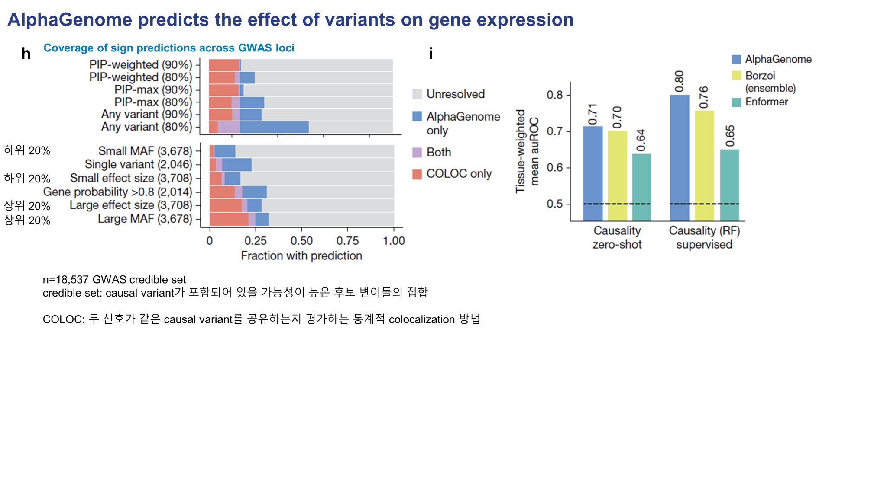

Figure 4. Predicting the effect of variants on gene expression¶
Panels A–G — eQTL direction과 effect size 예측¶

Figure 4의 앞부분은 유전 변이가 특정 유전자의 발현을 올리는지 내리는지,
그리고 그 변화의 크기를 AlphaGenome이 얼마나 잘 예측할 수 있는지를 보여줍니다.
패널 A에서는 variant effect score를 어떻게 정의했는지를 보여줍니다.
같은 위치의 서열에 대해 reference allele과 alternative allele을 각각 넣어 RNA-seq signal을 예측한 뒤,
해당 유전자의 annotated exon 영역에서 평균 signal을 집계합니다.
그 다음 각 allele의 exon-level signal을 log scale로 변환하고,
ALT − REF의 signed log-fold change를 effect size로 정의합니다.
여기서 Figure 3과 다른 점은, expression에서는 변화의 방향 자체가 중요하므로
절대값을 취하지 않고 부호를 유지한 score를 사용한다는 점입니다.
패널 B에서는 colon의 APOL4 유전자 주변 eQTL 예시를 보여줍니다.
실제 observed data에서도 variant가 생겼을 때 RNA-seq signal이 감소하고,
AlphaGenome의 predicted track에서도 같은 방향의 감소가 나타납니다.
즉, 모델이 단순히 발현량의 존재 여부만 보는 것이 아니라
variant로 인해 발현이 증가하는지 감소하는지 방향까지 잘 포착한다는 것을 보여줍니다.
오른쪽의 ISM 결과는 관심 variant 주변 약 20 bp 구간에서
각 염기를 하나씩 바꾸었을 때 RNA-seq가 얼마나 달라지는지를 계산한 것입니다.
이를 통해 어떤 염기와 어떤 motif가 expression effect에 가장 큰 영향을 주는지를 해석할 수 있습니다.
패널 C와 D는 effect size의 정량 평가입니다.
정답으로 사용하는 값은 SuSiE beta posterior인데,
이는 실제 사람 데이터에서 해당 변이가 발현을 얼마나 올리거나 내리는지를 fine-mapping 기반으로 추정한 값이라고 보면 됩니다.
AlphaGenome은 Borzoi나 Enformer보다 더 높은 Spearman correlation을 보여줍니다.
패널 E–G는 effect size 전체를 맞추는 대신,
발현이 증가하는지 감소하는지 sign만 맞출 수 있는가를 평가합니다.
이 평가에서도 AlphaGenome은 전반적으로 더 좋은 성능을 보이며,
특히 variant가 TSS로부터 더 멀리 떨어진 distal regulatory variant 구간에서도
상대적으로 더 강한 예측력을 유지합니다.
패널 G는 confidence와 recall의 trade-off를 보여줍니다.
예를 들어 sign accuracy를 약 90% 수준으로 맞추는 조건에서도
AlphaGenome은 전체 eQTL 중 꽤 큰 비율을 회수합니다.
Panels H–I — GWAS credible set과 causal variant interpretation¶

패널 H는 GWAS 데이터셋에서 발견된 변이가 실제 trait-associated causal variant인지 얼마나 잘 구분할 수 있는지를 평가합니다.
여기서 credible set은 causal variant가 포함되어 있을 가능성이 높은 후보 변이들의 집합입니다.
또 COLOC은 두 신호가 같은 causal variant를 공유하는지 평가하는 통계적 colocalization 방법입니다.
저자들은 AlphaGenome이 예측한 variant effect를 바탕으로 PIP-weighted score를 계산하고,
이 score를 이용해 disease-associated variant 후보를 선별합니다.
그 다음 그 변이가 발현을 증가시키는지 감소시키는지, 즉 sign을 얼마나 잘 맞추는지를 평가합니다.
이 결과에서 AlphaGenome은 COLOC과 비교해서 더 높은 coverage와 경쟁력 있는 예측을 보이며,
또 저자들은 두 방법이 완전히 같은 정보를 보는 것이 아니기 때문에
sequence-based prediction과 statistical colocalization이 상호보완적이라고 설명합니다.
패널 I는 한 단계 더 나아가 effect size의 크기까지 맞추는 causal effect prediction입니다.
여기서 zero-shot setting에서는 AlphaGenome이 Borzoi와 비슷하거나 더 나은 수준을 보이고,
random forest를 이용한 supervised learning을 추가하면
AlphaGenome feature를 사용한 경우가 더 높은 성능을 냅니다.
즉, AlphaGenome이 만들어내는 variant-level feature 자체가
기존 모델보다 정보량이 많고 downstream task에 유용하다는 의미입니다.
Panel J — enhancer–gene linking¶
이번 업로드에는 Figure 4의 panel J 이미지가 포함되어 있지 않아서 페이지에는 넣지 않았지만,
발표 대본 기준으로 보면 이 패널은 AlphaGenome이 enhancer–gene linking task에서도
zero-shot과 supervised setting 모두에서 경쟁력 있는 성능을 보인다는 점을 설명합니다.
핵심은 다음과 같습니다.
- distance to TSS가 가까운 구간뿐 아니라
- 100–2,500 kb 같은 장거리 구간에서도
- AlphaGenome feature가 기존 방법보다 더 유용한 signal을 제공할 수 있다는 것
즉, AlphaGenome은 단순한 expression sign prediction을 넘어서
enhancer–gene 연결 관계를 설명하는 feature source로도 사용할 수 있습니다.